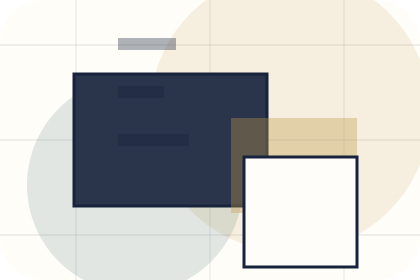
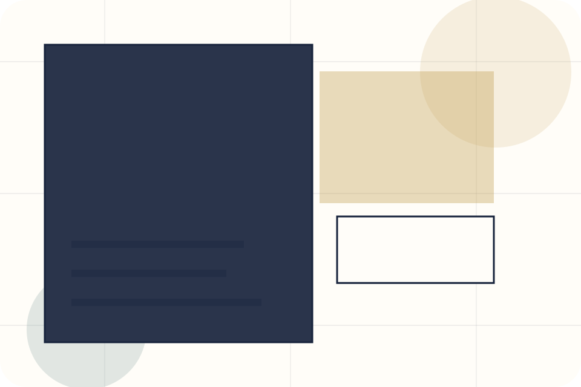
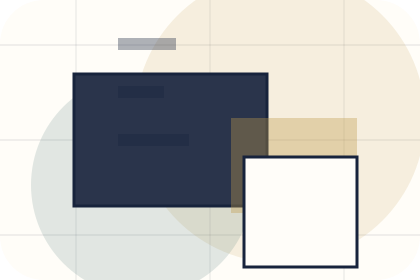
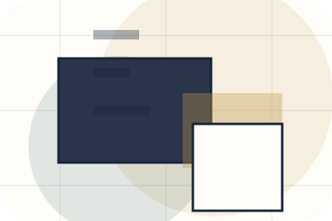
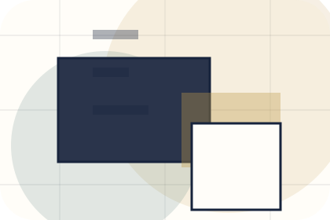
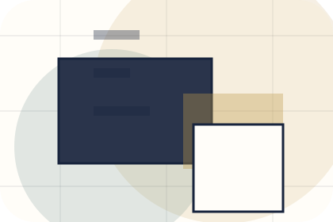
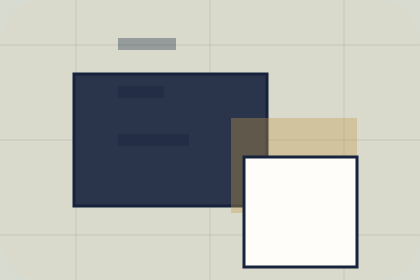

Role
The person, team, or specialist function connected to biography is easy to understand.
Profile / 01
Profile opens as a clear personal brands decision hub: what Brand offers, who it helps, why it matters, and which route to take first.
The first screen combines positioning, proof, primary action, and fast internal navigation, so people can act immediately or compare the rest of the profile route with context.
Editorial author hero
Select the closest route and Brand keeps the next step, proof, and follow-up expectation aligned with authority and booking confidence.

Profile / 02
Biography introduces the people, roles, or specialist credibility behind Brand so the decision feels less anonymous.
The copy ties names, roles, credentials, or availability back to the decision on the page instead of treating profiles as decorative biographies.
Explore Profile
The person, team, or specialist function connected to biography is easy to understand.

Credentials, responsibilities, or availability are tied to the visitor's decision, not listed for decoration.

The section explains how to move from profile interest to a practical conversation or booking path.
Profile / 03
Story introduces the people, roles, or specialist credibility behind Brand so the decision feels less anonymous.
The copy ties names, roles, credentials, or availability back to the decision on the page instead of treating profiles as decorative biographies.
Explore ProfileThe person, team, or specialist function connected to story is easy to understand.
Credentials, responsibilities, or availability are tied to the visitor's decision, not listed for decoration.
The section explains how to move from profile interest to a practical conversation or booking path.
Profile / 04
Values introduces the people, roles, or specialist credibility behind Brand so the decision feels less anonymous.
The copy ties names, roles, credentials, or availability back to the decision on the page instead of treating profiles as decorative biographies.
Explore ProfileThe person, team, or specialist function connected to values is easy to understand.
Credentials, responsibilities, or availability are tied to the visitor's decision, not listed for decoration.
The section explains how to move from profile interest to a practical conversation or booking path.
Profile / 05
Timeline explains the operating sequence so visitors can see how the first request becomes a clear recommendation and follow-up.
The steps are written from the visitor side: what they do first, what Brand clarifies, what they receive, and how support continues.
Explore ProfileBrand structures timeline around start, clarify, and a clear next route so visitors can compare the block quickly before they book an appearance.
Book AppearanceProfile / 06
Expertise introduces the people, roles, or specialist credibility behind Brand so the decision feels less anonymous.
The copy ties names, roles, credentials, or availability back to the decision on the page instead of treating profiles as decorative biographies.
Explore Profile

The person, team, or specialist function connected to expertise is easy to understand.
Profile / 07
Proof shows what changes after the work: clearer decisions, visible progress, and proof points that connect the offer to real outcomes.
The layout connects before-and-after thinking with measured outcomes, making the result easy to scan without promising what the business cannot guarantee.
Explore ProfileThe uncertainty, delay, or missed opportunity visitors bring into proof.
The clearer, safer, or more valuable state Brand is designed to support.
The visible cue that connects proof to a believable decision, not a loose claim.
Profile / 08
Recognition introduces the people, roles, or specialist credibility behind Brand so the decision feels less anonymous.
The copy ties names, roles, credentials, or availability back to the decision on the page instead of treating profiles as decorative biographies.
Explore ProfileThe person, team, or specialist function connected to recognition is easy to understand.
Credentials, responsibilities, or availability are tied to the visitor's decision, not listed for decoration.
The section explains how to move from profile interest to a practical conversation or booking path.
Profile / 09
Trust gives the proof layer for profile: standards, evidence, and reassurance that make the next decision feel grounded.
Instead of relying on vague claims, Brand presents visible standards, process cues, and proof artifacts that help personal brands visitors judge fit.
Explore ProfileVisible proof that helps visitors believe the claims behind trust.
The quality, safety, or operating expectation this section makes explicit.
What becomes clearer before someone decides whether to book an appearance.
Profile / 10
Brand closes the profile route with a clear action, a quick reminder of the value, and a low-friction way to book an appearance.
Visitors who are ready can use the primary action. Visitors who are still comparing can scan the section links, proof, and support routes before they book an appearance.
Book AppearanceThe final block keeps the choice simple: act now, compare one more proof route, or send enough detail for a focused response.
Book Appearanceauthority and booking confidence
A personal brand site with editorial essay rhythm, speaking/media cards, newsletter conversion, and booking clarity. Profile ends with a direct path to book an appearance, plus enough context for visitors who still need to compare.

Book AppearanceInformation is provided for planning and should be reviewed for the final client, location, and operating rules.